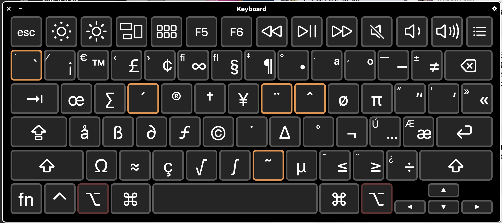

TreeviewCopyright © aleen42 all right reserved, powered by aleen42
Mac 常用的快捷键使用，小白秒变老鸟
之前介绍过，up主的观点就是能使用键盘解决的就尽量使用键盘解决。因为使用鼠标有一个很大的问题，就是你需要去瞄准->选择，这样的过程是一个需要消耗精力的过程，而使用快捷键可能一开始你不熟悉的时候，需要想一下，用多了，是肌肉记忆，不会耗费精力。当然用熟练了，提升效率那是自然了。你想想你用的Ctrl + C, Ctrl + V，是不是肌肉记忆？是不是足够的高效？
Modifier Keys （修饰键）
- Shift: ⇧
- Command: Cmd / ⌘ /
- Control: Cntl / ⌃
- Option: Opt / ⌥
一些UP主常用的快捷键
默认快捷键
- Cmd + C: Copy
- Cmd + V: Paste
- Cmd + X: Cut
- Cmd + A: Select All
- Cmd + Z: Undo
- Cmd + Shift + Z: Redo
- Cmd + Tab: 切换窗口（以后会重点分享一下，这个MacOS程序和窗口是分开的，Windows用户表示接受不了……………………）
- Cmd + W: Close Window/Tab
- Cmd + Q: Quit
- Cmd + N: New XX(file, finder, terminal...)
- Cmd + S: Save
- Cmd + Shift + S: Save As...
- Cmd + O: Open file
- Cmd + P: 打印（可以导出PDF）
- Cmd + Shift + N: New folder
- Cmd + Shift + Delete: Empty Trush(我很少用，更多的还是使用Alfred)
- Cmd + ,: 偏好设置
- Cmd + <- ->: 行首，行尾
- Cmd + 上下键: 文档头，文档尾
Up主修改过的
- Cmd + Space: 切换输入法
- Option + Space: 唤起Alfred
- Hold Cmd: 唤起CheatSheet(对Mac不熟悉的人不建议，快捷键太多了，会把人搞晕的)
一个比较有用的快捷输入符号的方法
- 打开系统软键盘按住Option键  这上面的符号都可以随便输
- Cmd + Cntl + space 调取符号输入对话框，这下你想怎么输就怎么输